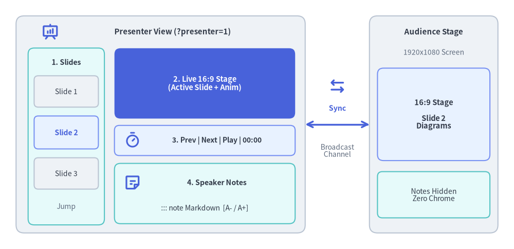
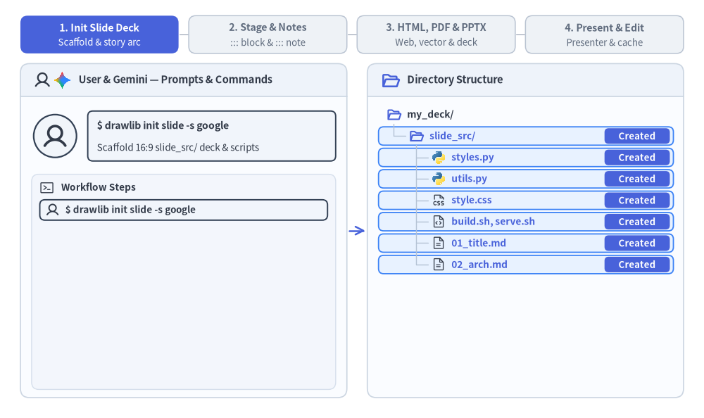

スライドデッキプロジェクトガイド (drawlib init slide)
slide スターターテンプレートは、リッチなアーキテクチャ図解、メトリクスカード、バッジ、および構造化レイアウトを備えた 16:9 プレゼンテーションスライドデッキを作成します。
Drawlib はスライドデッキを インタラクティブな HTML Web プレゼンテーション、1 ページ 1 スライドのベクター PDF、および ネイティブ編集可能な 16:9 MS PowerPoint（.pptx）デッキ へコンパイルし、カンファレンス登壇、顧客向けブリーフィング、チーム内レビューに最適なサイズで出力します。

Source Code
from drawlib.canvas import save, setup
from drawlib.icons import phosphor
from drawlib.lines import line
from drawlib.shapes import rectangle
from drawlib.styles import Styles
from drawlib.text import text
setup(width=128, height=62)
# Left Container: Presenter View Window (?presenter=1)
rectangle((40, 31), width=72, height=54, style=Styles.Neutral.patch(shape_r=2.0))
phosphor.presentation_chart((12.5, 54.0), width=4.4, style=Styles.PrimaryBold)
text((43.0, 54.0), "Presenter View (?presenter=1)", style=Styles.DarkBold.patch(text_size=10.8))
# Pane 1: Left Column (Slide Thumbnails Strip)
rectangle((16.5, 28.0), width=19, height=44, style=Styles.SecondaryNeutral.patch(shape_r=1.5))
text((16.5, 46.5), "1. Slides", style=Styles.DarkBold.patch(text_size=10.2))
rectangle((16.5, 39.2), width=16, height=7.8, style=Styles.Neutral.patch(shape_r=1.0), text="Slide 1", text_style=Styles.Dark.patch(text_size=10.0))
rectangle(
(16.5, 29.0),
width=16,
height=8.2,
style=Styles.PrimaryNeutral.patch(shape_r=1.0),
text="Slide 2",
text_style=Styles.PrimaryBold.patch(text_size=10.2),
)
rectangle((16.5, 18.8), width=16, height=7.8, style=Styles.Neutral.patch(shape_r=1.0), text="Slide 3", text_style=Styles.Dark.patch(text_size=10.0))
text((16.5, 10.5), "Jump", style=Styles.Muted.patch(text_size=10.0))
# Pane 2: Top-Right (Live 16:9 Current Slide Preview)
rectangle(
(51.0, 41.2),
width=45,
height=17.5,
style=Styles.PrimaryFlat.patch(shape_r=1.5),
text="2. Live 16:9 Stage\n(Active Slide + Anim)",
text_style=Styles.WhiteBold.patch(text_size=10.5),
)
# Pane 3: Middle-Right (Control & Timer Bar)
rectangle((51.0, 27.0), width=45, height=7.5, style=Styles.PrimaryNeutral.patch(shape_r=1.2))
phosphor.timer((33.0, 27.0), width=4.2, style=Styles.PrimaryBold)
text((54.0, 27.0), "3. Prev | Next | Play | 00:00", style=Styles.DarkBold.patch(text_size=10.0))
# Pane 4: Bottom-Right (Speaker Notes Pane)
rectangle((51.0, 13.8), width=45, height=15.0, style=Styles.SecondaryNeutral.patch(shape_r=1.5))
phosphor.note((33.0, 16.5), width=4.4, style=Styles.PrimaryBold)
text((54.0, 16.5), "4. Speaker Notes", style=Styles.DarkBold.patch(text_size=10.2))
text((51.0, 10.2), "::: note Markdown [A- / A+]", style=Styles.Dark.patch(text_size=10.0))
# Bidirectional BroadcastChannel Sync Connector
phosphor.arrows_left_right((84.0, 40.5), width=4.6, style=Styles.PrimaryBold)
line((76, 31), (92, 31), arrow_head="<->", style=Styles.PrimaryBold)
text((84.0, 35.0), "Sync", style=Styles.PrimaryBold.patch(text_size=10.2))
text((84.0, 24.5), "Broadcast\nChannel", style=Styles.Muted.patch(text_size=10.0))
# Right Container: Audience Main Stage Window
rectangle((108, 31), width=32, height=54, style=Styles.Neutral.patch(shape_r=2.0))
text((108, 54.0), "Audience Stage", style=Styles.DarkBold.patch(text_size=10.8))
text((108, 49.0), "1920x1080 Screen", style=Styles.Muted.patch(text_size=10.0))
rectangle(
(108, 33.5),
width=28,
height=23,
style=Styles.PrimaryNeutral.patch(shape_r=1.5),
text="16:9 Stage\n\nSlide 2\nDiagrams",
text_style=Styles.DarkBold.patch(text_size=10.5),
)
rectangle(
(108, 13.5),
width=28,
height=11.5,
style=Styles.SecondaryNeutral.patch(shape_r=1.2),
text="Notes Hidden\nZero Chrome",
text_style=Styles.Dark.patch(text_size=10.0),
)
save()
1. エンドツーエンドのプロジェクトワークフロー
drawlib init slide による初期スキャフォールディングとストーリー構成の設計から、2 層構造の執筆（::: block ステージ＋::: note スピーカー台本）、HTML／PDF／.pptx へのコンパイル、ライブ発表者ツール（?presenter=1）、そしてキャッシュを活用した Day-2 の高速編集までの流れを確認しましょう。

Source Code
from __future__ import annotations
from drawlib.anim import Animation
from drawlib.canvas import save, setup
from drawlib.icons import ai, code, devops, phosphor, workspace
from drawlib.lines import line
from drawlib.shapes import circle, rectangle
from drawlib.styles import Styles
from drawlib.text import text
W, H = 138.0, 82.0
setup(width=W, height=H)
anim = Animation(fps=10.0, loop=0)
PANE_BG = Styles.Neutral.patch(
shape_fill_color=(250, 252, 255),
shape_line_width=0,
shape_r=1.8,
)
PANE_HEADER_TOP = Styles.Neutral.patch(
shape_fill_color=(238, 243, 250),
shape_line_width=0,
shape_r=1.8,
)
PANE_HEADER_FLAT = Styles.Neutral.patch(
shape_fill_color=(238, 243, 250),
shape_line_width=0,
shape_r=0.0,
)
PANE_BORDER = Styles.Neutral.patch(
shape_fill_color=(0, 0, 0, 0),
shape_line_color=(203, 213, 225),
shape_line_width=1.2,
shape_r=1.8,
)
SUBPANEL_BG = Styles.Neutral.patch(
shape_fill_color=(243, 246, 252),
shape_line_color=(214, 223, 236),
shape_line_width=1.0,
shape_r=1.4,
)
ROW_ACTIVE = Styles.PrimaryNeutral.patch(
shape_fill_color=(232, 242, 255),
shape_line_color=(59, 130, 246),
shape_line_width=1.3,
shape_r=1.0,
)
ROW_USER = Styles.Neutral.patch(
shape_fill_color=(241, 245, 251),
shape_line_color=(51, 65, 85),
shape_line_width=1.4,
shape_r=1.0,
)
ROW_OPTIONAL = Styles.PrimaryDashed.patch(
shape_fill_color=(242, 247, 255),
shape_line_color=(59, 130, 246),
shape_line_width=1.2,
shape_r=1.0,
)
ROW_OPTIONAL_DONE = Styles.MutedDashed.patch(
shape_fill_color=(255, 255, 255),
shape_line_color=(196, 208, 224),
shape_line_width=1.0,
shape_r=1.0,
)
ROW_CACHED = Styles.PrimaryNeutral.patch(
shape_fill_color=(242, 247, 255),
shape_line_color=(147, 197, 253),
shape_line_width=1.0,
shape_r=1.0,
)
ROW_OUTPUT = Styles.SecondaryNeutral.patch(
shape_fill_color=(236, 250, 244),
shape_line_color=(34, 160, 107),
shape_line_width=1.2,
shape_r=1.0,
)
ROW_DONE = Styles.Neutral.patch(
shape_fill_color=(255, 255, 255),
shape_line_color=(218, 226, 238),
shape_line_width=1.0,
shape_r=1.0,
)
PART_ITEMS = [
("1. Init Slide Deck", "Scaffold & story arc"),
("2. Stage & Notes", "::: block & ::: note"),
("3. HTML, PDF & PPTX", "Web, vector & deck"),
("4. Present & Edit", "Presenter & cache"),
]
def draw_step_bar(active_part: int) -> None:
"""Draw top 4-pill progress bar aligned with both panes."""
pill_w = 31.0
pill_h = 7.4
gap = 2.0
start_x = 4.0 + pill_w / 2.0
cy = 75.2
for idx, (label, sublabel) in enumerate(PART_ITEMS, start=1):
cx = start_x + (idx - 1) * (pill_w + gap)
if idx > 1:
prev_cx = cx - (pill_w + gap)
line(
(prev_cx + pill_w / 2.0 + 0.2, cy),
(cx - pill_w / 2.0 - 0.2, cy),
style=Styles.PrimaryBold if idx <= active_part else Styles.MutedThin,
)
if idx == active_part:
st = Styles.PrimaryFlat.patch(shape_r=1.4)
tst = Styles.WhiteBold.patch(text_size=10.2)
sub_tst = Styles.White.patch(text_size=9.5)
elif idx < active_part:
st = Styles.PrimaryNeutral.patch(shape_r=1.4, shape_line_width=1.1)
tst = Styles.PrimaryBold.patch(text_size=10.2)
sub_tst = Styles.Primary.patch(text_size=9.5)
else:
st = Styles.Neutral.patch(shape_r=1.4, shape_line_width=1.1)
tst = Styles.MutedBold.patch(text_size=10.2)
sub_tst = Styles.Muted.patch(text_size=9.5)
rectangle((cx, cy), width=pill_w, height=pill_h, style=st)
text((cx, cy + 1.35), label, style=tst)
text((cx, cy - 1.55), sublabel, style=sub_tst)
def draw_pane_shell(cx: float, width: float) -> None:
"""Draw rounded pane container with top header bar."""
rectangle((cx, 36.75), width=width, height=65.5, style=PANE_BG)
rectangle((cx, 66.25), width=width, height=6.5, style=PANE_HEADER_TOP)
rectangle((cx, 64.60), width=width, height=3.2, style=PANE_HEADER_FLAT)
line(
(cx - width / 2.0, 63.0),
(cx + width / 2.0, 63.0),
style=Styles.Neutral.patch(line_color=(203, 213, 225), line_width=1.2),
)
rectangle((cx, 36.75), width=width, height=65.5, style=PANE_BORDER)
def draw_user_avatar(xy: tuple[float, float], radius: float = 4.2) -> None:
"""Draw circular User avatar badge."""
circle(
xy,
radius=radius,
style=Styles.Neutral.patch(
shape_fill_color=(241, 245, 250),
shape_line_color=(51, 65, 85),
shape_line_width=1.6,
),
)
phosphor.user(xy, width=radius * 1.25, style=Styles.DarkBold)
def draw_gemini_avatar(xy: tuple[float, float], radius: float = 4.2) -> None:
"""Draw circular Gemini avatar badge."""
circle(
xy,
radius=radius,
style=Styles.Neutral.patch(
shape_fill_color=(248, 250, 255),
shape_line_color=(59, 130, 246),
shape_line_width=1.5,
),
)
ai.gemini(xy, width=radius * 1.42, style=Styles.Neutral)
def draw_actor_row_icon(
actor_kind: str,
xy: tuple[float, float],
*,
muted: bool = False,
) -> None:
"""Draw mini User or Gemini icon at the start of an operation row."""
if actor_kind == "user":
phosphor.user(
xy,
width=2.8,
style=Styles.Muted if muted else Styles.DarkBold,
)
elif actor_kind == "user_git":
phosphor.user(
xy,
width=2.8,
style=Styles.Muted if muted else Styles.DarkBold,
)
devops.git((xy[0] + 2.8, xy[1]), width=2.6, style=Styles.Neutral)
else:
ai.gemini(xy, width=2.9, style=Styles.Neutral)
def draw_tree_icon(kind: str, xy: tuple[float, float], *, muted: bool = False) -> None:
"""Draw file or folder icon in the right-side directory tree."""
if kind == "folder_open":
phosphor.folder_open(
xy,
width=3.0,
style=Styles.Muted if muted else Styles.PrimaryBold,
)
elif kind == "py":
code.python(xy, width=2.8, style=Styles.Neutral)
elif kind == "css":
phosphor.file_css(
xy,
width=2.9,
style=Styles.Muted if muted else Styles.Dark,
)
elif kind == "md":
phosphor.file_text(
xy,
width=2.9,
style=Styles.Muted if muted else Styles.Dark,
)
elif kind == "sh":
phosphor.file_code(
xy,
width=2.9,
style=Styles.Muted if muted else Styles.Dark,
)
elif kind == "globe":
phosphor.presentation_chart(
xy,
width=3.0,
style=Styles.Muted if muted else Styles.PrimaryBold,
)
elif kind == "pdf":
phosphor.file_pdf(
xy,
width=3.0,
style=Styles.Muted if muted else Styles.Danger,
)
elif kind == "pptx":
workspace.powerpoint(xy, width=2.9, style=Styles.Neutral)
def draw_workspace(
*,
active_part: int,
actor: str,
actor_title: str,
actor_sub: str,
actor_optional: bool,
ops: list[tuple[str, str, str]],
show_day2_note: bool,
show_flow: bool,
show_outputs: bool,
row_states: dict[str, tuple[str, str]],
committed: bool,
pulse_arrow: bool,
) -> None:
"""Draw 2-pane split workspace for the slide project workflow."""
draw_step_bar(active_part)
# Left Pane: User & Gemini — Prompts & Commands
draw_pane_shell(36.0, 64.0)
phosphor.user((8.3, 66.25), width=3.4, style=Styles.DarkBold)
ai.gemini((12.2, 66.25), width=3.7, style=Styles.Neutral)
text(
(15.4, 66.25),
"User & Gemini — Prompts & Commands",
style=Styles.DarkBold.patch(text_size=10.5, halign="left"),
)
if actor == "user":
draw_user_avatar((10.8, 55.3), radius=4.2)
bubble_st = ROW_USER
title_st = Styles.DarkBold.patch(text_size=10.2, halign="left")
else:
draw_gemini_avatar((10.8, 55.3), radius=4.2)
bubble_st = ROW_OPTIONAL if actor_optional else ROW_ACTIVE
title_st = Styles.PrimaryBold.patch(text_size=10.2, halign="left")
rectangle((41.5, 55.3), width=48.6, height=9.8, style=bubble_st)
text((19.0, 57.3), actor_title, style=title_st)
text(
(19.0, 53.0),
actor_sub,
style=Styles.Dark.patch(text_size=9.7, halign="left"),
)
rectangle((36.0, 26.7), width=59.6, height=42.2, style=SUBPANEL_BG)
phosphor.terminal_window((9.2, 45.2), width=3.1, style=Styles.Dark)
text(
(12.0, 45.2),
"Workflow Steps",
style=Styles.DarkBold.patch(text_size=9.8, halign="left"),
)
op_ys = [40.8, 36.2, 31.6, 27.0, 22.4, 17.8, 13.2, 8.6]
for (akind, label, state), oy in zip(ops, op_ys):
is_done_like = state in {"done", "optional_done"}
if state == "active_user":
ost = ROW_USER
otxt = Styles.DarkBold.patch(text_size=9.7, halign="left")
elif state == "active_gemini":
ost = ROW_ACTIVE
otxt = Styles.PrimaryBold.patch(text_size=9.7, halign="left")
elif state == "optional":
ost = ROW_OPTIONAL
otxt = Styles.PrimaryBold.patch(text_size=9.7, halign="left")
elif state == "optional_done":
ost = ROW_OPTIONAL_DONE
otxt = Styles.Dark.patch(text_size=9.6, halign="left")
else:
ost = ROW_DONE
otxt = Styles.Dark.patch(text_size=9.6, halign="left")
rectangle((36.0, oy), width=56.4, height=4.0, style=ost)
draw_actor_row_icon(akind, (10.3, oy), muted=is_done_like)
text((15.5 if akind == "user_git" else 12.8, oy), label, style=otxt)
if state in {"optional", "optional_done"}:
opt_pill_st = (
Styles.PrimaryNeutral.patch(shape_r=0.8)
if state == "optional"
else Styles.Neutral.patch(
shape_fill_color=(244, 247, 252),
shape_line_color=(196, 208, 224),
shape_line_width=1.0,
shape_r=0.8,
)
)
opt_txt_st = (
Styles.PrimaryBold.patch(text_size=9.5)
if state == "optional"
else Styles.MutedBold.patch(text_size=9.5)
)
rectangle(
(58.2, oy),
width=10.4,
height=3.1,
style=opt_pill_st,
text="Optional",
text_style=opt_txt_st,
)
if show_day2_note:
rectangle(
(36.0, 12.0),
width=55.6,
height=7.4,
style=Styles.Neutral.patch(
shape_fill_color=(255, 255, 255),
shape_line_color=(210, 220, 234),
shape_line_width=1.0,
shape_r=1.1,
),
)
text(
(36.0, 13.7),
"styles.py, utils.py & style.css stay untouched",
style=Styles.MutedBold.patch(text_size=9.6),
)
text(
(36.0, 10.1),
"Unchanged slides restore from .drawlib/cache.db",
style=Styles.Muted.patch(text_size=9.5),
)
line(
(68.4, 36.75),
(71.6, 36.75),
arrow_head="->",
style=(
Styles.PrimaryBold.patch(line_width=1.8)
if pulse_arrow
else Styles.MutedThin.patch(line_width=1.2)
),
)
# Right Pane: Directory Structure
draw_pane_shell(103.0, 62.0)
phosphor.folder_open((76.6, 66.25), width=3.8, style=Styles.PrimaryBold)
text(
(79.8, 66.25),
"Directory Structure",
style=Styles.DarkBold.patch(text_size=10.6, halign="left"),
)
if committed:
rectangle((123.2, 66.25), width=17.6, height=4.4, style=ROW_OUTPUT)
devops.git((116.8, 66.25), width=2.8, style=Styles.Neutral)
text(
(119.0, 66.25),
"Committed",
style=Styles.SecondaryBold.patch(text_size=9.5, halign="left"),
)
tree_rows: list[tuple[str, int, str, str, float]] = [
("root", 0, "folder_open", "my_deck/", 59.50),
("slide_src", 1, "folder_open", "slide_src/", 55.30),
("styles", 2, "py", "styles.py", 51.10),
("utils", 2, "py", "utils.py", 46.90),
("css", 2, "css", "style.css", 42.70),
("scripts", 2, "sh", "build.sh, serve.sh", 38.50),
("s01", 2, "md", "01_title.md", 34.30),
("s02", 2, "md", "02_arch.md", 30.10),
]
if show_flow:
tree_rows.append(("s03", 2, "md", "03_flow.md", 25.90))
if show_outputs:
tree_rows.extend(
[
("out_html", 1, "globe", "slide_html/", 19.60),
("out_pdf", 1, "pdf", "slide.pdf", 15.20),
("out_pptx", 1, "pptx", "slide.pptx", 10.80),
]
)
for key, _lvl, _ik, _lbl, ry in tree_rows:
if key not in row_states:
continue
rstate, badge_txt = row_states[key]
if rstate in {"new", "active"}:
rst = ROW_ACTIVE
b_st = Styles.PrimaryFlat.patch(shape_r=0.8)
b_txt = Styles.WhiteBold.patch(text_size=9.5)
elif rstate == "optional":
rst = ROW_OPTIONAL
b_st = Styles.PrimaryNeutral.patch(shape_r=0.8)
b_txt = Styles.PrimaryBold.patch(text_size=9.5)
elif rstate == "cached":
rst = ROW_CACHED
b_st = Styles.PrimaryNeutral.patch(shape_r=0.8)
b_txt = Styles.PrimaryBold.patch(text_size=9.5)
elif rstate == "output":
rst = ROW_OUTPUT
b_st = Styles.SecondaryFlat.patch(shape_r=0.8)
b_txt = Styles.WhiteBold.patch(text_size=9.5)
else:
rst = None
b_st = None
b_txt = None
if rst is not None:
rectangle((103.1, ry), width=57.8, height=3.60, style=rst)
if badge_txt and b_st is not None and b_txt is not None:
bw = 15.6 if len(badge_txt) >= 10 else 12.8
bcx = 131.3 - bw / 2.0
rectangle(
(bcx, ry),
width=bw,
height=3.05,
style=b_st,
text=badge_txt,
text_style=b_txt,
)
guide_st = Styles.MutedThin.patch(line_color=(180, 194, 212), line_width=1.0)
last_lvl1_y = min(ry for _k, lvl, _ik, _l, ry in tree_rows if lvl == 1)
last_lvl2_y = min(ry for _k, lvl, _ik, _l, ry in tree_rows if lvl == 2)
line((77.2, 57.7), (77.2, last_lvl1_y), style=guide_st)
line((81.6, 53.5), (81.6, last_lvl2_y), style=guide_st)
for key, lvl, ik, lbl, ry in tree_rows:
rstate = row_states.get(key, ("normal", ""))[0]
is_muted = rstate == "muted"
if lvl == 0:
ix, lx = 77.2, 79.8
elif lvl == 1:
line((77.2, ry), (79.5, ry), style=guide_st)
ix, lx = 81.6, 84.2
else:
line((81.6, ry), (83.9, ry), style=guide_st)
ix, lx = 86.0, 88.5
draw_tree_icon(ik, (ix, ry), muted=is_muted)
if rstate in {"new", "active", "optional", "cached"}:
t_st = Styles.PrimaryBold.patch(text_size=9.9, halign="left")
elif rstate == "output":
t_st = Styles.SecondaryBold.patch(text_size=9.9, halign="left")
elif is_muted:
t_st = Styles.Muted.patch(text_size=9.7, halign="left")
elif lvl <= 1:
t_st = Styles.DarkBold.patch(text_size=9.9, halign="left")
else:
t_st = Styles.Dark.patch(text_size=9.8, halign="left")
text((lx, ry), lbl, style=t_st)
# Phase 1: 1. Init Slide Deck (f0..f2)
with anim.frame(duration=3.1):
draw_workspace(
active_part=1,
actor="user",
actor_title="$ drawlib init slide -s google",
actor_sub="Scaffold 16:9 slide_src/ deck & scripts",
actor_optional=False,
ops=[
("user", "$ drawlib init slide -s google", "active_user"),
],
show_day2_note=False,
show_flow=False,
show_outputs=False,
row_states={
"slide_src": ("new", "Created"),
"styles": ("new", "Created"),
"utils": ("new", "Created"),
"css": ("new", "Created"),
"scripts": ("new", "Created"),
"s01": ("new", "Created"),
"s02": ("new", "Created"),
},
committed=False,
pulse_arrow=True,
)
with anim.frame(duration=3.1):
draw_workspace(
active_part=1,
actor="gemini",
actor_title="Gemini: Configure theme in styles.py",
actor_sub="Set presentation palette, cards & fonts",
actor_optional=False,
ops=[
("user", "$ drawlib init slide -s google", "done"),
("gemini", "Edit slide_src/styles.py, utils.py", "active_gemini"),
],
show_day2_note=False,
show_flow=False,
show_outputs=False,
row_states={
"styles": ("active", "Updated"),
"utils": ("active", "Updated"),
},
committed=False,
pulse_arrow=True,
)
with anim.frame(duration=3.3):
draw_workspace(
active_part=1,
actor="gemini",
actor_title="Gemini: Plan slide deck story arc",
actor_sub="Structure numbered slides 01_title..03_flow",
actor_optional=False,
ops=[
("user", "$ drawlib init slide -s google", "done"),
("gemini", "Edit slide_src/styles.py, utils.py", "done"),
("gemini", "Plan story arc (01_title..03_flow.md)", "active_gemini"),
],
show_day2_note=False,
show_flow=True,
show_outputs=False,
row_states={
"s01": ("active", "Updated"),
"s02": ("active", "Updated"),
"s03": ("new", "Created"),
},
committed=False,
pulse_arrow=True,
)
# Phase 2: 2. Stage & Notes (f3..f5)
with anim.frame(duration=3.1):
draw_workspace(
active_part=2,
actor="gemini",
actor_title="Gemini: Author ::: block stage panels",
actor_sub="1920x1080 layout + .svg / animated .webp",
actor_optional=False,
ops=[
("user", "$ drawlib init slide -s google", "done"),
("gemini", "Configure styles.py & 01..03 story arc", "done"),
("gemini", "Author ::: block stage + .svg / .webp", "active_gemini"),
],
show_day2_note=False,
show_flow=True,
show_outputs=False,
row_states={
"s01": ("active", "Updated"),
"s02": ("active", "Updated"),
"s03": ("active", "Updated"),
},
committed=False,
pulse_arrow=True,
)
with anim.frame(duration=3.1):
draw_workspace(
active_part=2,
actor="gemini",
actor_title="Gemini: Add ::: note speaker scripts",
actor_sub="Hidden on stage; synced to Presenter & PPTX",
actor_optional=False,
ops=[
("user", "$ drawlib init slide -s google", "done"),
("gemini", "Configure styles.py & 01..03 story arc", "done"),
("gemini", "Author ::: block stage + .svg / .webp", "done"),
("gemini", "Add ::: note speaker notes to slides", "active_gemini"),
],
show_day2_note=False,
show_flow=True,
show_outputs=False,
row_states={
"s01": ("active", "::: note"),
"s02": ("active", "::: note"),
"s03": ("active", "::: note"),
},
committed=False,
pulse_arrow=True,
)
with anim.frame(duration=3.3):
draw_workspace(
active_part=2,
actor="gemini",
actor_title="$ drawlib show .../02_arch.md arch.svg -g",
actor_sub="Verify diagram coordinates & stage margins",
actor_optional=False,
ops=[
("user", "$ drawlib init slide -s google", "done"),
("gemini", "Configure styles.py & 01..03 story arc", "done"),
("gemini", "Author ::: block stage & ::: note", "done"),
("gemini", "$ drawlib show .../02_arch.md arch.svg -g", "active_gemini"),
],
show_day2_note=False,
show_flow=True,
show_outputs=False,
row_states={
"s01": ("output", "Verified"),
"s02": ("output", "Verified"),
"s03": ("output", "Verified"),
},
committed=False,
pulse_arrow=False,
)
# Phase 3: 3. HTML, PDF & PPTX (f6..f8)
with anim.frame(duration=3.1):
draw_workspace(
active_part=3,
actor="gemini",
actor_title="$ ./slide_src/build.sh",
actor_sub="Compile interactive slide_html/ & vector PDF",
actor_optional=False,
ops=[
("user", "$ drawlib init slide -s google", "done"),
("gemini", "Configure styles.py & 01..03 story arc", "done"),
("gemini", "Author & grid-verify slides + notes", "done"),
("gemini", "$ ./slide_src/build.sh (HTML + PDF)", "active_gemini"),
],
show_day2_note=False,
show_flow=True,
show_outputs=True,
row_states={
"scripts": ("active", "Running"),
"out_html": ("output", "Output"),
"out_pdf": ("output", "Output"),
"out_pptx": ("optional", "Optional"),
},
committed=False,
pulse_arrow=True,
)
with anim.frame(duration=3.1):
draw_workspace(
active_part=3,
actor="gemini",
actor_title="$ drawlib build pptx slide_src/ -o slide.pptx",
actor_sub="Export editable 16:9 PowerPoint + notes",
actor_optional=True,
ops=[
("user", "$ drawlib init slide -s google", "done"),
("gemini", "Configure styles.py & 01..03 story arc", "done"),
("gemini", "Author & grid-verify slides + notes", "done"),
("gemini", "$ ./slide_src/build.sh (HTML + PDF)", "done"),
("gemini", "$ drawlib build pptx slide_src/", "optional"),
],
show_day2_note=False,
show_flow=True,
show_outputs=True,
row_states={
"out_html": ("output", "Output"),
"out_pdf": ("output", "Output"),
"out_pptx": ("output", "Output"),
},
committed=False,
pulse_arrow=True,
)
with anim.frame(duration=3.3):
draw_workspace(
active_part=3,
actor="user",
actor_title='User: $ git commit -m "Add slide deck"',
actor_sub="Markdown slides & exports versioned in Git",
actor_optional=False,
ops=[
("user", "$ drawlib init slide -s google", "done"),
("gemini", "Configure styles.py & 01..03 story arc", "done"),
("gemini", "Author & grid-verify slides + notes", "done"),
("gemini", "$ ./slide_src/build.sh (HTML + PDF)", "done"),
("gemini", "$ drawlib build pptx slide_src/", "optional_done"),
("user_git", '$ git add . && git commit -m "Init deck"', "active_user"),
],
show_day2_note=False,
show_flow=True,
show_outputs=True,
row_states={},
committed=True,
pulse_arrow=False,
)
# Phase 4: 4. Present & Edit (f9..f11)
with anim.frame(duration=3.1):
draw_workspace(
active_part=4,
actor="user",
actor_title="$ ./slide_src/serve.sh (?presenter=1)",
actor_sub="Audience Deck + Presenter (BroadcastChannel)",
actor_optional=False,
ops=[
("user", "$ ./slide_src/serve.sh (?presenter=1)", "active_user"),
],
show_day2_note=False,
show_flow=True,
show_outputs=True,
row_states={
"scripts": ("active", "Serving"),
"out_html": ("active", "Presenter"),
},
committed=False,
pulse_arrow=True,
)
with anim.frame(duration=3.1):
draw_workspace(
active_part=4,
actor="gemini",
actor_title="1 day later: Tweak 02_arch.md & rebuild",
actor_sub="Unchanged slides hit .drawlib/cache.db (<1ms)",
actor_optional=False,
ops=[
("user", "$ ./slide_src/serve.sh (?presenter=1)", "done"),
("user", '1 day later: "Refine 02_arch.md"', "done"),
("gemini", "Edit 02_arch.md & ./slide_src/build.sh", "active_gemini"),
],
show_day2_note=True,
show_flow=True,
show_outputs=True,
row_states={
"styles": ("muted", ""),
"utils": ("muted", ""),
"css": ("muted", ""),
"s01": ("cached", "Cached <1ms"),
"s02": ("active", "Modified"),
"s03": ("cached", "Cached <1ms"),
"out_html": ("output", "Output"),
"out_pdf": ("output", "Output"),
"out_pptx": ("muted", ""),
},
committed=False,
pulse_arrow=True,
)
with anim.frame(duration=3.3):
draw_workspace(
active_part=4,
actor="user",
actor_title="Re-export updated deck & git commit",
actor_sub="HTML, PDF & PPTX refreshed and committed",
actor_optional=False,
ops=[
("user", "$ ./slide_src/serve.sh (?presenter=1)", "done"),
("user", '1 day later: "Refine 02_arch.md"', "done"),
("gemini", "Edit 02_arch.md & ./slide_src/build.sh", "done"),
("gemini", "$ drawlib build pptx slide_src/", "optional_done"),
("user_git", '$ git commit -m "Update arch slide"', "active_user"),
],
show_day2_note=True,
show_flow=True,
show_outputs=True,
row_states={
"out_html": ("output", "Updated"),
"out_pdf": ("output", "Updated"),
"out_pptx": ("output", "Updated"),
},
committed=True,
pulse_arrow=False,
)
save()
2. プロジェクトの初期化
drawlib init を使用してプレゼンテーションプロジェクトをスキャフォールディングします。
# Scaffold standard slide project in current directory (creates 'slide_src/'):
drawlib init slide
# With custom target name, theme, and language (creates 'my_deck_src/'):
drawlib init slide my_deck -s google -l en
3. ディレクトリ構成と構造
slide プロジェクトでは、すべての執筆用ソースファイルを slide_src/ 内に集約し、それと並列に出力成果物をコンパイルします。
slide_src/（信頼できる唯一の情報源）:01_title.md,02_agenda.md,03_arch.md（およびセクションサブフォルダ）: ソートされたパス順にコンパイルされる1920x1080（16:9）の個別スライドファイルです。::: blockステージコンテナ、```drawlib図解（.svg、.png、.webp）、および::: noteスピーカーノートを組み合わせて記述します。_始まりのファイルとREADME.md: 構成案や下書きスライド（_planning.md、_drafts/）およびREADME.mdは、スライドデッキのコンパイル対象から自動的に除外されます。_assets/: 出力先フォルダへ同期される静的なロゴ、フォント、参照メディアです。styles.py&utils.py: プレゼンテーション全体で共有されるカラートークン、タイポグラフィ既定値、スライドヘッダー／フッターヘルパー、KPI／カードユーティリティです。style.css&slide.js: 16:9 ビューポート自動スケーリング用スタイルシート、キーボードナビゲーションコントローラー、およびBroadcastChannelによる発表者ツール（Presenter View）ランタイムです。build.sh,build_html.sh,build_pdf.sh,build_image.sh,serve.sh: モジュール化されたビルドスクリプトおよびローカルプレゼンテーションプレビューランチャーです。
- 生成される出力先（直接編集しないでください）:
slide_html/: フルスクリーン表示、一覧グリッド表示、および?presenter=1発表者ツールをサポートするインタラクティブなブラウザ用スライドデッキ（index.html）です。slide.pdf: ヘッドレス Chromium によってレンダリングされる、1 ページあたり1920px × 1080pxのマルチページベクター PDF です。slide.pptx:drawlib build pptxでオンデマンド出力されるネイティブ編集可能な 16:9（960×540 pt）MS PowerPoint デッキです。ステージカード、テキストラン、図解、スピーカーノートがそのまま保持されます。slide_images/:build_image.sh実行時に単体ファイルとして抽出される図解画像群です。
4. 用途に応じた複数のプレゼンテーション出力
slide プロジェクトは、あらゆる発表・共有シナリオに合わせた成果物を生成します。
| 出力先 | 想定シーン・環境 | 主な特徴 | ビルドスクリプト / コマンド |
|---|---|---|---|
slide_html/index.html |
インタラクティブな発表 | 1920x1080 固定ステージ、ビューポート自動スケーリング、キーボード操作（Space, 矢印キー, F）、発表者ツール（?presenter=1）、スライド一覧グリッド |
build_html.sh (drawlib build slide) |
slide.pdf |
印刷・閲覧専用配布 | 1 ページ 1 スライド、鮮明なベクターグラフィックス、正確な 16:9 アスペクト比（@page { size: 1920px 1080px; margin: 0; }） |
build_pdf.sh (drawlib build pdf) |
slide.pptx |
共同編集・エグゼクティブ向け資料 | ネイティブ編集可能な 16:9（960×540 pt）MS PowerPoint デッキ（rgba 透過対応の ::: block カード、テキストボックス、リスト、表、::: note スピーカーノート、高 DPI 図解 PNG） |
drawlib build pptx |
slide_images/ |
外部スライド・SNS 共有 | 外部資料やチャット共有に使える単体抽出されたスライド図解画像 | build_image.sh (drawlib build image) |
5. スライドとステージブロックの執筆
slide_src/ 内（および 01_intro/01_cover.md のようなネストされた章サブディレクトリ内）の各 Markdown ファイルは、1 枚の 16:9 スライド（1920x1080 ステージ）を表し、相対パスのソート順にコンパイルされます。
- 非スライドファイルの除外（
_プレフィックス）: 企画メモ、構成案、下書きファイルやフォルダの先頭にアンダースコア_（例:_planning.md、_drafts/）を付けると、スライドのコンパイル対象から除外されます。 - 特別に除外されるファイル:
README.mdおよびnavbar.mdもスライドデッキから自動的に除外されます。
標準の Markdown や utils.py のヘルパーコンポーネントとあわせて ::: block xy=(x, y) width=W height=H コンテナを使用します（ステージ座標系の詳細リファレンス、レイアウトテンプレート、drawlib.slide API については スライドステージレイアウトと API を参照してください）。
::: block xy=(80, 40) width=1760 height=60
# Architecture Overview
:::
::: block xy=(80, 140) width=1760 height=840
```drawlib file=arch_flow.svg
from drawlib.canvas import clear, save, setup
from drawlib.shapes import rectangle
from drawlib.lines import line
from drawlib.styles import Styles
clear()
setup(width=176, height=84)
rectangle((35, 42), width=38, height=22, style=Styles.Neutral, text="Producer")
rectangle((88, 42), width=38, height=22, style=Styles.PrimaryFlat, text="Kafka", text_style=Styles.WhiteBold)
rectangle((141, 42), width=38, height=22, style=Styles.SecondaryNeutral, text="Consumer")
line((54, 42), (69, 42), arrow_head="->", style=Styles.DarkBold)
line((107, 42), (122, 42), arrow_head="->", style=Styles.DarkBold)
save()
```
:::
6. モジュール化されたビルドスクリプトと MS PowerPoint (.pptx) エクスポート
build_html.sh: 各スライドをslide_html/index.htmlの Web プレゼンテーションデッキへコンパイルします（drawlib build slide）。build_pdf.sh: ヘッドレス Chromium を使用して各スライドをキャプチャし、マルチページのベクター PDF（slide.pdf）を生成します。build_image.sh: 埋め込まれたdrawlibブロックを抽出し、slide_images/に単体の図解画像として出力します。build.sh（マスタースクリプト）: HTML、PDF、画像のビルドを順番に実行します。- 編集可能な MS PowerPoint エクスポート (
drawlib build pptx): ヘッドレス Chromium で1920x1080スライド DOM と計算済み CSS スタイルを計測し、ネイティブ編集可能な 16:9（960x540 pt）の.pptxファイルをエクスポートします。uv run drawlib build pptx slide_src/ -o slide.pptx --dpi 240 --anim-frame last
7. ローカルプレビューとプレゼンテーション実行
ローカル開発プレビューサーバーを起動します。
./slide_src/serve.sh
または直接コマンドを実行します。
uv run drawlib serve slide_html/
キーボードショートカットと URL ディープリンク:
→/Space/PageDown: 次のスライドへ進む←/PageUp: 前のスライドへ戻るF: フルスクリーン表示の切り替えO/Esc: スライド一覧グリッド表示の切り替えP/S: 同期された別ウィンドウで 発表者ツール（Presenter View） を開くA: 現在のスライド上のアニメーションを再生／一時停止／再開- URL ハッシュによるディープリンク (
#1,#2, ...):index.html#4にアクセスするとスライド 4 に直接ジャンプし、スライドを送ると URL ハッシュもリアルタイムに更新されるため、ブックマークやリンク共有が容易です。 - 発表者ツールの直接 URL (
?presenter=1):?presenter=1#1を付与すると発表者ツールモードで直接起動し、BroadcastChannel/localStorageを介してウィンドウ間でスライド遷移やアニメーション再生を同期します。
スピーカーノート (::: note) と発表者ツール:
::: note ブロックを使用して任意のスライドにスピーカーノートを追加できます。1 つのスライド内に複数の ::: note ブロックがある場合は空行（\n\n）で自動結合され、発表者ツール（Presenter View） 上で Markdown としてレンダリングされるほか、drawlib build pptx 実行時には PowerPoint ネイティブのスピーカーノート としてエクスポートされます（メインの発表画面および PDF エクスポートでは完全に非表示になります）。
::: note
**Key Talking Points**:
- Emphasize single source of truth in Git.
- Click **Play Animation** (or press `A`) to step through the pipeline.
:::
P または S キーを押す（あるいは右下のコントロールバーにある 🗒 ボタンをクリックする）と、以下の機能を備えた 発表者ツール（Presenter View）（?presenter=1）が開きます。
- 左カラム: 任意のスライドへ瞬時にジャンプできる縦スクロール式のライブサムネイル一覧。
- 右上ペイン: 現在のスライドのライブ 16:9 プレビュー。
- 右中央（コントロールバー）:
◀ Prev/Next ▶ナビゲーション、メインウィンドウと同期する▶ Play Animationボタン（アニメーションのないスライドでは自動的に無効化／グレーアウトされます）、およびプレゼンテーション経過タイマー（00:00）。 - 右下ペイン（スピーカーノート）:
A-/A+フォントサイズ調整機能付きのコンパイル済みスピーカーノート。
インタラクティブなアニメーション再生制御 (anim_trigger, anim_loop, anim_pause):
スライド内に APNG（.png / .apng）またはアニメーション WebP（.webp）の図解を埋め込む際、drawlib コードフェンスに再生制御属性を指定できます。
```drawlib file=workflow.webp anim_trigger=click anim_loop=once anim_pause=(2, 4)
```
anim_trigger=click(auto|click): 発表者がクリックするまでフレーム 0 で待機します。anim_loop=once(once|infinite): 最終フレームで停止（ENDED）し、再度クリックするとフレーム 0 から再生し直します。anim_pause=(2, 4): 0 始まりのフレームインデックス2と4で一時停止（PAUSED）し、クリックすると次のステップへ再開します。- ベクター PDF エクスポート (
build_pdf.sh): インタラクティブな再生バッジを表示せず、自動的にフレーム 0 をスライド上にレンダリングします。 - MS PowerPoint エクスポート (
drawlib build pptx): デフォルトでは最終フレーム（--anim-frame last）、--anim-frame first指定時は先頭フレームを使用して、--dpi 240の鮮明な静的 PNG を抽出・埋め込みます。
8. マルチエージェントによる並列スライドデッキ執筆
slide_src/ 内の各スライドは独立した Markdown ファイル（01_title.md、02_agenda.md、03_arch.md、またはセクションフォルダ単位）であるため、AI コーディングエージェントは複数枚のプレゼンテーションを並列に構築・刷新できます。
- フェーズ 1（親エージェントによる初期設定）: 最初に
slide_src/をスキャフォールディング（drawlib init slide）し、styles.pyとutils.pyを設定したうえで、スライドデッキ全体のストーリー構成と番号付きファイル名を定義します。 - フェーズ 2（サブエージェントによる並列執筆）: 重複しないスライドファイル（またはセクションディレクトリ）を並列サブエージェントに割り当てます。各サブエージェントは担当スライド（
::: blockステージレイアウト＋::: noteスピーカー台本）を執筆し、一意なスクラッチパス（-o .drawlib/scratch/<slide>_<block>_grid.png）で-gグリッドプレビューを実行します。 - フェーズ 3（統合デッキビルドとレビュー）: すべてのサブエージェントがスライドを完了した後、親エージェントが
./slide_src/build.sh（および必要に応じてdrawlib build pptx）を 1 回実行し、コンパイルされたslide.pdfとslide_html/index.htmlを検証します。